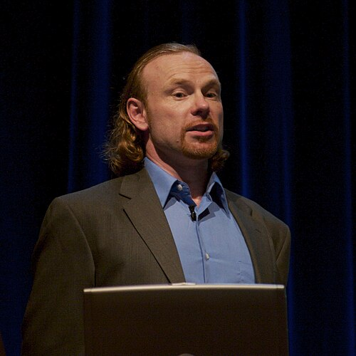
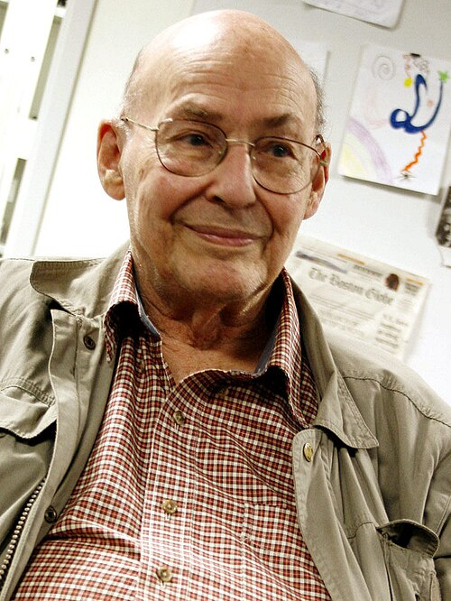

MMKey figures
The cast
Founders, theorists, builders, and financiers of the project.
'">
Founder
Max More
b. 1964Born Max O'Connor; changed his name to signal perpetual self-improvement. Founded the Extropy Institute (1988) and wrote The Principles of Extropy.
Wikipedia →
Co-founder
Tom Morrow (T.O. Morrow)
—Pen name of the co-founder of the Extropy Institute and Extropy magazine alongside Max More. A play on "tomorrow."

MMAI pioneer
Marvin Minsky
1927–2016Turing Award-winning founder of MIT's AI Lab, drawn to the Extropian milieu. His "society of mind" framing fed the movement's faith in machine intelligence. Later named in connection to Epstein.
Wikipedia →
Futurist
Ray Kurzweil
b. 1948Popularized the technological singularity and longevity escape velocity. Reportedly dismissed ordinary human experience as "noise" against the coming machine intelligence.
Wikipedia →JA
'">Early member
Julian Assange
b. 1971The future WikiLeaks founder was an early participant in the Extropian / cypherpunk crossover, years before his work on cryptography and leaks.
Wikipedia →
Member → theorist
Nick Bostrom
b. 1973Active in the Extropian milieu before co-founding the WTA. Carried the project into academic longtermism. A leaked racist email later forced a public apology.
Wikipedia →
Member → economist
Robin Hanson
b. 1959Economist and Extropian who co-founded the Overcoming Bias blog — a direct ancestor of the rationalist community — and theorized about uploaded "em" economies.
Wikipedia →
Member (teen) → ideologue
Eliezer Yudkowsky
b. 1979Entered the Extropian community as a teenager, predicting superintelligence by 2020. Carried its memes into Singularitarianism and founded what became MIRI.
Wikipedia →
Member / financier
Jeffrey Epstein
1953–2019Transhumanist with eugenic aims — reportedly wanted to "seed the human race with his DNA" and arranged cryonic preservation. Funded figures across the milieu.
Wikipedia →